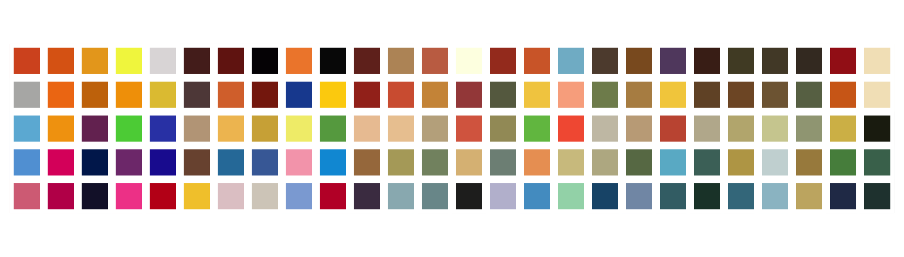
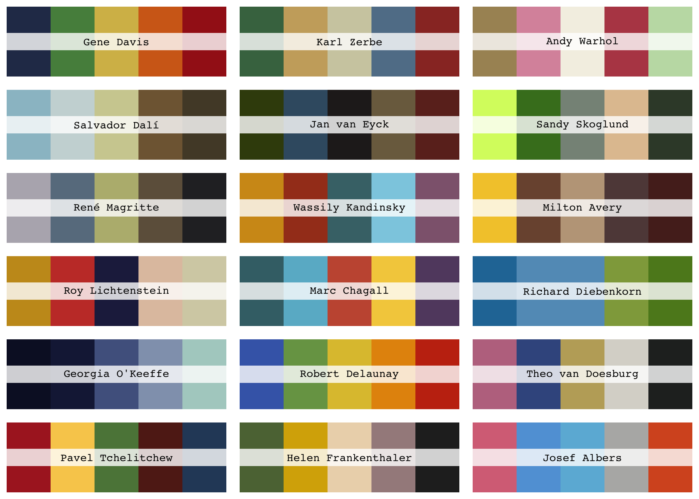
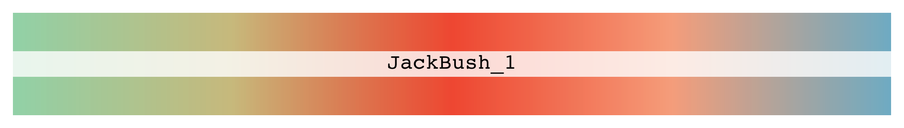
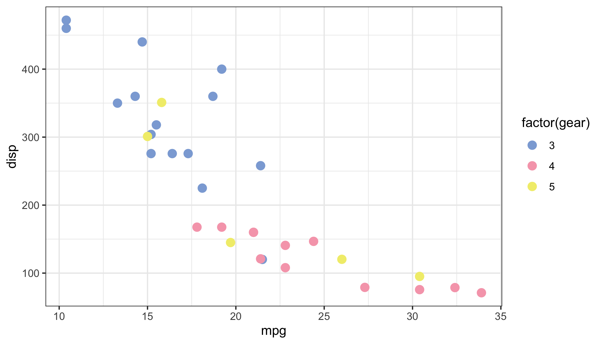

This is a color palette R package that contains 128 palettes from Color Lisa.

Installation
Install the released version of lisa from CRAN:
Or install the development version from GitHub with:
If you aren’t an R user, you might be interested in palettes.yml which contains all palettes in YAML format.
Palettes
Here’s a sample of the available palettes:

You can also call and/or modify palettes using lisa_palette:
x <- lisa_palette("JackBush_1", 1000, "continuous")
y <- lisa_palette("PabloPicasso", 2, "discrete")
z <- lisa_palette("KatsushikaHokusai", 1000, "continuous")
lapply(list(x, y, z), plot)
All palettes have 3 attributes associated with them, you can access them with the lisa list:
lisa$VincentvanGogh
#> * Work: The Starry Night
#> * Author: Vincent van Gogh
#> * Colors: #1a3431 #2b41a7 #6283c8 #ccc776 #c7ad24There is also a table with more information of all available palettes:
artwork
#> # A tibble: 128 x 5
#> author work palette colors url
#> <chr> <chr> <chr> <chr> <chr>
#> 1 Josef Alb… Adobe (Varian… JosefAlbers #D77186 #61A2… http://www.wikiart.org/…
#> 2 Josef Alb… Homage to the… JosefAlber… #C00559 #DE1F… http://www.wikiart.org/…
#> 3 Gretchen … Golden Cloud GretchenAl… #171635 #0022… https://www.google.com/…
#> 4 Billy App… Rainbow BillyApple #F24D98 #813B… http://www.wikiart.org/…
#> 5 Per Arnol… Spar PerArnoldi #C2151B #2021… http://www.moma.org/col…
#> 6 Milton Av… Bicycle Rider… MiltonAvery #F3C937 #7B53… http://www.wikiart.org/…
#> 7 Milton Av… Cello Player MiltonAver… #E2CACD #2E7C… http://www.wikiart.org/…
#> 8 Hilma af … The Swan HilmaafKli… #D6CFC4 #466C… https://artblart.files.…
#> 9 Jean-Mich… Untitled (Bla… Jean-Miche… #8CABD9 #F6A7… http://www.widewalls.ch…
#> 10 Jean-Mich… DUSTHEADS Jean-Miche… #C11432 #009A… http://www.christies.co…
#> # … with 118 more rowsExample ggplot2 usage:
library(ggplot2)
ggplot(mtcars, aes(mpg, disp)) +
geom_point(aes(col = factor(gear)), size = 3) +
scale_color_manual(values = lisa$`Jean-MichelBasquiat`) +
theme_bw()
Acknowledgements
- Color Lisa for the color palettes
-
wesandersonfor source code that powers most things in this repository